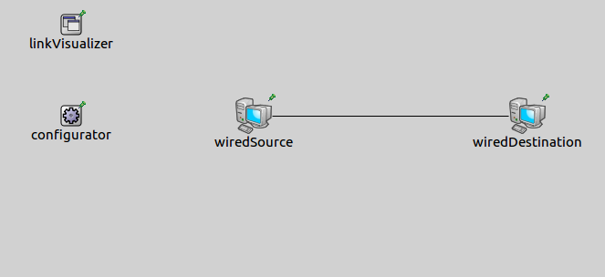
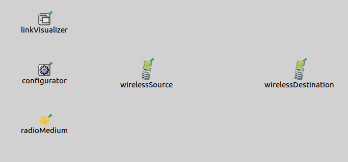
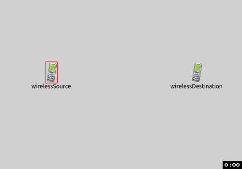
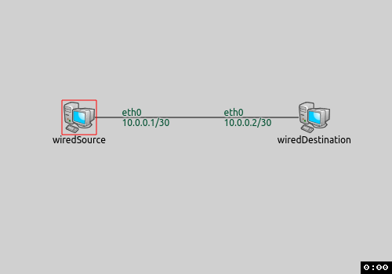

In complex networks there are a lot of communication between the nodes. It is difficult to ascertain whether a packet arrived to the receiver node succesfully. Visualizing data links we can determine the active second layer links in the network. It is especially helpful if a packet doesn't reach the destination node. In this case we can see at a glance where the communication is jammed.
The example consists of 3 simulation models, each demonstrating different features of data link visualization.
The DatalinkVisualizer keeps track of active data links in a network. A link becomes active between two nodes when a packet arrives at the receiver node's data link layer from the source node's data link layer. Data links can be established only between adjacent devices. By default links are not displayed, we can enable their visualization by switching the displayLinks parameter to true.
The links are represented visually by solid arrows. The arrow's starting point is the sender node and its endpoint is the receiver node. The visualizer has filtering parameters, like nodeFilter, interfaceFilter and packetFilter. Using these we can specify which data links are shown. By default all nodes, all interfaces and all packets are considered for displaying data links. It is possible to use logical expressions as the filter's parameter, e.g packetFilter = "ping* or tcp*" shows the ping and the tcp data links.
In this configuration we show how to enable the visualization's default look. We visualize data links both in a wired and in a wireless network.
The wired network contains two Standardhost nodes, an IPv4NetworkConfigurator module and a DataLinkVisualizer module. In wireless network the type of the hosts is AdhocHost and there is an additional Ieee80211ScalarRadioMedium module.


In both configurations the source host pings the destination host, and an additional line of code enables the DatalinkVisualizer with the displayLinks parameter.
When we start the simulation, here is what happens:


The communication starts between the nodes. When a message reaches its destination's data link layer, the datalink is activated between the nodes and an arrow is shown pointing from the sender towards the receiver. Then the arrow fades out in real time.
This configuration demonstrates the visualization of data links in a non-trivial network. In this simulation we also show how the filters work. The network for this configuration is here:
The network contains four switches and four endpoints, two source hosts and two destination hosts. The source hosts pings the destination hosts. Data links are enabled, but they are filtered. They are displayed only if a ping message is sent. We adjust the fadeOutMode and the fadeOutTime parameters to see better the active links. Here is the configuration:
The following animation shows what happens when we start the simulation:
TODO: gif
Only ping messages activate the data links between the nodes because of the packetFilter. The data links are represented by solid arrows. The arrows start to fade out in simulation time, but they don't disappear completely, because the fadeOutTime is greater than the sending interval of ping messages. Only one data link can be activated per direction between the nodes. When another packet is sent between the same nodes, the same data link is activated.
The goal of this configuration is to demonstrates
This example only demonstrated the key features of data link visualization. For more information, refer to the DatalinkVisualizer NED documentation.